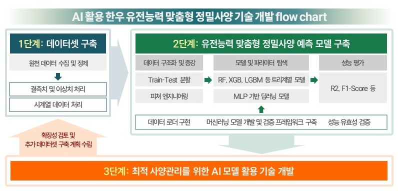

인공지능 서비스
미래에는 AI 접목기술 개발이 필요합니다.
이를 통해서, 한우 생산성의 획기적인 향상이 가능하며,
자동화/무인 농장 시스템에 대한 대비와 노동력 대체 방안 모색이 가능합니다.
데이터셋 구축하고, 예측 알고리즘 개발하며,
개발한 알고리즘 활용하여 ‘AI 활용 유전능력 맞춤형 정밀사양 서비스’를 실시할 계획입니다.
유전능력 분석부터 맞춤형 사양관리 및 경영 진단까지 AI 기반 종합 솔루션을 제공할 계획입니다.
AI 서비스 개발 주요 내용
1단계
데이터셋 구축
원천 데이터 수집 및 정제 · 결측치 및 이상치 처리 · 시계열 데이터 처리
2단계
유전능력 맞춤형 정밀사양 예측 모델 구축
RF, XGB, LGBM 등 트리계열 모델 · MLP 기반 딥러닝 모델 · R2, F1-Score 성능 평가
3단계
최적 사양관리를 위한 AI 모델 활용 기술 개발
확장성 검토 및 추가 데이터셋 구축 계획 수립

AI 활용 한우 유전능력 맞춤형 정밀사양 기술 개발 flow chart